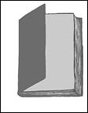

Dossier : Jane Eyre
Cette œuvre littéraire recommandée par les instructions officielles pour la classe de troisième, peut aussi convenir aux classes de quatrième (au moins dans sa dimension abrégée) puisque les programmes recommandent, l’étude d’un roman du XIXe siècle.
Du roman contemporain à la littérature classique (1/2)
Mais à quoi rêvent les jeunes filles 1 ? – dans la littérature classique, et plus particulièrement au théâtre, chez Molière, Marivaux, Musset, Giraudoux, Anouilh, et, aujourd’hui, dans les écritures féminines de jeunesse.
Du roman contemporain à la littérature classique(2/2)
Nombreuses sont les jeunes filles dans le théâtre, les romans et journaux de Marivaux. Leurs prénoms sont ancrés dans la mémoire des lecteurs et spectateurs : Silvia (Le Jeu de l’amour et du hasard, La Double Inconstance, Arlequin poli par l’amour)...
Étude de la langue
Cette fiche explore le champ sémantique du verbe voir. Elle peut prolonger une analyse en relation avec la lecture et l’observation des textes.

Bande dessinée
La bande dessinée et, spécifiquement, les « romans graphiques » – récits de voyages, récits de vie, récits du quotidien –, comprennent de nombreuses œuvres fortes aidant à découvrir différents visages de la francophonie.

Témoignage
Les professeurs de lycée ont tendance à mépriser leurs collègues de collège. C’est un tort : l’essentiel et le durable se font dans le premier cycle. Tout professeur devrait avoir enseigné à tous les niveaux du système scolaire. [...]